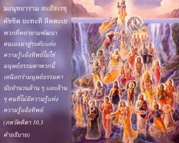
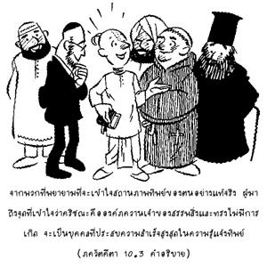
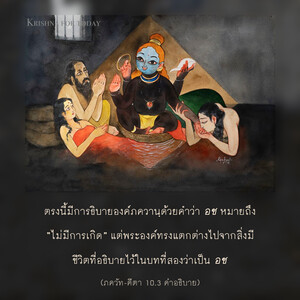

ผู้ที่รู้ว่าข้าคือผู้ไม่มีการเกิด ไม่มีจุดเริ่มต้น รู้ว่าข้าคือองค์ภควานที่สูงสุดของโลกทั้งหลาย ผู้นั้นเท่านั้นที่ไม่หลงผิดในหมู่มนุษย์ และเป็นอิสระจากความบาปทั้งปวง



ดังที่ได้กล่าวไว้ในบทที่เจ็ด (7.3) ว่า มนุษฺยาณำ สหเสฺรษุ กศฺจิทฺ ยตติ สิทฺธเย พวกที่พยายามพัฒนาตนเองมาสู่ระดับแห่งความรู้แจ้งทิพย์ไม่ใช่มนุษย์ธรรมดา พวกนี้เหนือกว่ามนุษย์ธรรมดาหลายล้านคนที่ไม่มีความรู้แห่งความรู้แจ้งทิพย์ แต่จากพวกที่พยายามที่จะเข้าใจสถานภาพทิพย์ของตนอย่างแท้จริง ผู้มาถึงจุดที่เข้าใจว่าองค์กฺฤษฺณ คือองค์ภควานฺ เจ้าของสรรพสิ่ง และทรงไม่มีการเกิดจะเป็นบุคคลที่ประสบความสำเร็จสูงสุดในความรู้แจ้งทิพย์ ในระดับนี้เท่านั้นที่จะเข้าใจสถานภาพอันสูงสุดขององค์กฺฤษฺณอย่างเต็มเปี่ยม และเป็นอิสระจากผลบาปทั้งปวงโดยสมบูรณ์
ตรงนี้มีการธิบายองค์ภควานฺด้วยคำว่า อช หมายถึง “ไม่มีการเกิด” แต่พระองค์ทรงแตกต่างไปจากสิ่งมีชีวิตที่อธิบายไว้ในบทที่สองว่าเป็น อช พระองค์ทรงแตกต่างจากสิ่งมีชีวิตที่เกิดและตายอันเนื่องมาจากความยึดติดทางวัตถุ พันธวิญญาณเปลี่ยนร่างของตนเองแต่พระวรกายขององค์ภควานฺไม่มีการเปลี่ยนแปลง แม้เมื่อครั้งที่เสด็จลงมายังโลกวัตถุนี้ซึ่งจะมาในรูปลักษณ์ที่ไม่มีการเกิดเหมือนเดิม ดังนั้นในบทที่สี่ได้กล่าวไว้ว่า ด้วยพลังอำนาจเบื้องสูงของพระองค์ที่ทรงมิได้อยู่ภายใต้พลังงานวัตถุเบื้องต่ำแต่อยู่ในพลังงานเบื้องสูงเสมอ
ในโศลกนี้คำว่า เวตฺติ โลก-มเหศฺวรมฺ แสดงว่าเราควรรู้ว่าองค์ศฺรี กฺฤษฺณทรงเป็นเจ้าของสูงสุดแห่งระบบดาวเคราะห์ต่างๆในจักรวาล พระองค์ทรงอยู่ก่อนการสร้างและพระองค์ทรงแตกต่างจากการสร้าง เหล่าเทวดาทั้งหลายถูกสร้างขึ้นมาภายในโลกวัตถุนี้ แต่สำหรับองค์กฺฤษฺณกล่าวไว้ว่าพระองค์ทรงมิได้ถูกสร้างขึ้นมา ดังนั้นองค์กฺฤษฺณทรงแตกต่างจากแม้แต่เทวดาผู้ยิ่งใหญ่ เช่น พระพรหม และพระศิวะ เพราะพระองค์ทรงเป็นผู้สร้าง พระพรหม พระศิวะ และเทวดาอื่นๆทั้งหลาย พระองค์จึงทรงเป็นบุคคลสูงสุดของดาวเคราะห์ทั้งหมด
ดังนั้นองค์ศฺรี กฺฤษฺณทรงแตกต่างจากทุกสิ่งทุกอย่างที่ถูกสร้างขึ้นมา ผู้ใดที่รู้เช่นนี้เป็นผู้ที่หลุดพ้นจากผลบาปทั้งปวงทันที เราต้องเป็นอิสระจากกิจกรรมบาปทั้งหมดเพื่อมาอยู่ในความรู้แห่งองค์ภควานฺ ด้วยการอุทิศตนเสียสละเท่านั้นที่จะรู้ถึงพระองค์ได้ ไม่ใช่ด้วยวิธีอื่นใดทั้งสิ้น ดังที่ได้กล่าวไว้ใน ภควัท-คีตา
เราไม่ควรพยายามเข้าใจองค์กฺฤษฺณว่าเป็นมนุษย์ปุถุชนธรรมดา ดังที่กล่าวไว้แล้วว่าคนโง่เขลาเท่านั้นที่คิดว่าองค์กฺฤษฺณทรงเป็นบุคคลธรรมดา ได้เน้นไว้ ณ ที่นี้อีกครั้งหนึ่งด้วยวิธีที่ต่างกัน คนมีปัญญาพอที่จะเข้าใจสถานภาพพื้นฐานเดิมขององค์ภควานฺจะเป็นผู้ที่มีอิสระจากผลบาปทั้งปวงเสมอ
หากเป็นที่รู้กันว่าองค์กฺฤษฺณทรงเป็นบุตรของพระนาง เทวกี แล้วพระองค์จะทรงเป็นผู้ที่ไม่มีการเกิดได้อย่างไร ได้อธิบายไว้ใน ศฺรีมทฺ-ภาควตมฺ เช่นกัน เมื่อพระองค์ทรงปรากฏต่อหน้าพระนาง เทวกี และ วสุเทว พระองค์ทรงมิได้เกิดเหมือนเด็กน้อยธรรมดา องค์กฺฤษฺณทรงปรากฏในรูปลักษณ์เดิมแท้ของพระองค์ จากนั้นทรงเปลี่ยนพระวรกายมาเป็นเด็กน้อยธรรมดา
ทุกสิ่งทุกอย่างที่กระทำไปภายใต้คำสั่งขององค์กฺฤษฺณเป็นทิพย์ไม่มีมลทินจากผลทางวัตถุ ซึ่งอาจจะเป็นมงคลหรือไม่เป็นมงคล แนวคิดที่ว่ามีสิ่งที่เป็นมงคลและไม่เป็นมงคลในโลกวัตถุเป็นการอุปโลกน์ทางจิต ทุกสิ่งทุกอย่างไม่เป็นมงคลเพราะว่าตัวธรรมชาติวัตถุเองไม่เป็นมงคลเราเพียงแต่จินตนาการว่าเป็นมงคล ความเป็นสิริมงคลที่แท้จริงขึ้นอยู่กับกิจกรรมในกฺฤษฺณจิตสำนึกด้วยการอุทิศตนเสียสละและรับใช้อย่างเต็มเปี่ยม ดังนั้นหากเราปรารถนาให้กิจกรรมของพวกเราเป็นมงคลเราควรทำงานภายใต้คำชี้นำขององค์ภควานฺ คำชี้นำเหล่านี้ได้ให้ไว้ในพระคัมภีร์ที่เชื่อถือได้ เช่น ศฺรีมทฺ-ภาควตมฺ และ ภควัท-คีตา หรือจากพระอาจารย์ทิพย์ผู้เชื่อถือได้ เพราะว่าพระอาจารย์ทิพย์เป็นผู้แทนขององค์ภควานฺ คำชี้นำของท่านเป็นการชี้นำโดยตรงจากองค์ภควานฺ พระอาจารย์ทิพย์ นักบุญ และพระคัมภีร์ชี้นำไปในทางเดียวกันจะไม่มีข้อขัดแย้งในสามแหล่งนี้ การกระทำทั้งหมดภายใต้การชี้นำเช่นนี้เป็นอิสระจากผลบุญหรือผลบาปของโลกวัตถุนี้ ท่าทีทิพย์ของสาวกในการปฏิบัติกิจกรรมอันที่จริงเป็นการเสียสละจึงเรียกว่า สนฺนฺยาส ดังที่ได้กล่าวไว้ในโศลกหนึ่งบทที่หกของ ภควัท-คีตา ผู้ปฏิบัติไปตามหน้าที่เพราะได้รับคำสั่งให้ปฏิบัติจากองค์ภควานฺ และเป็นผู้ที่ไม่ได้หาที่พึ่งในผลแห่งกิจกรรมของตนเอง (อนาศฺริตห์ กรฺม-ผลมฺ) เป็นผู้เสียสละที่แท้จริง ผู้ใดปฏิบัติภายใต้การชี้นำขององค์ภควานฺเป็น สนฺนฺยาสี และเป็นโยคีที่แท้จริง ไม่ใช่บุคคลผู้แต่งชุด สนฺนฺยาสี หรือโยคีจอมปลอม